<title>Audit carte Atheria</title>
<meta name="claude:viewport-fit-sides" content="cover">
<link rel="stylesheet" href="https://fonts.googleapis.com/css2?family=Archivo:wght@500;700;800&family=Source+Sans+3:wght@400;600&display=swap">
<style>
/* Page de suivi : un encadré d'état, puis une section par sujet, images en grille */
:root{--bg:#f3f5f4;--panel:#ffffff;--fg:#17211e;--muted:#5b6b66;--line:#d5ddda;--accent:#0f7a6c;--warn:#a5520f;--ok:#1f7a3a;--toi:#8a3fa0;
--display:"Archivo",system-ui,sans-serif;--body:"Source Sans 3",system-ui,sans-serif}
@media (prefers-color-scheme:dark){:root:not([data-theme="light"]){--bg:#101615;--panel:#18201e;--fg:#e4ecea;--muted:#93a6a0;--line:#2b3734;--accent:#4cc3b1;--warn:#f0a35e;--ok:#6fd38c;--toi:#d59ae6;color-scheme:dark}}
:root[data-theme="dark"]{--bg:#101615;--panel:#18201e;--fg:#e4ecea;--muted:#93a6a0;--line:#2b3734;--accent:#4cc3b1;--warn:#f0a35e;--ok:#6fd38c;--toi:#d59ae6;color-scheme:dark}
body{background:var(--bg);color:var(--fg);font:16px/1.55 var(--body);padding-left:max(16px,env(safe-area-inset-left,0px));padding-right:max(16px,env(safe-area-inset-right,0px));padding-block:24px 64px;margin:0}
main{max-width:980px;margin:0 auto;display:grid;gap:36px}
h1{font:800 clamp(26px,6vw,40px)/1.1 var(--display);margin:0}
h2{font:700 21px/1.2 var(--display);margin:0;text-wrap:balance}
h3{font:700 16px/1.3 var(--display);margin:0}
p{margin:0;max-width:70ch} ul{margin:0;padding-left:20px;display:grid;gap:4px;max-width:70ch}
a{color:var(--accent)}
nav{display:flex;flex-wrap:wrap;gap:6px}nav a{font-size:14px;color:var(--fg);text-decoration:none;border:1px solid var(--line);border-radius:4px;padding:3px 9px;background:var(--panel)}
nav a:hover,nav a:focus-visible{border-color:var(--accent);outline:none}
.point{background:var(--panel);border:1px solid var(--line);border-radius:6px;padding:14px 16px;display:grid;gap:12px}
.point h2{font-size:19px}.point h3{font-size:15px}
.c-ok{color:var(--ok)}.c-cours{color:var(--warn)}.c-toi{color:var(--toi)}
section{display:grid;gap:14px;padding-top:18px;border-top:1px solid var(--line);scroll-margin-top:12px}
.lieu{display:grid;gap:10px;padding-top:12px}
.pastille{font:600 13px var(--body);border-radius:999px;padding:2px 10px;border:1px solid currentColor}
.pastille.ok{color:var(--ok)}.pastille.cours{color:var(--warn)}.pastille.toi{color:var(--toi)}
.duo{display:grid;grid-template-columns:repeat(auto-fit,minmax(min(100%,420px),1fr));gap:12px}.un{display:grid;gap:12px}
.paire{display:grid;grid-template-columns:repeat(2,minmax(0,1fr));gap:12px;align-items:start}@media (max-width:700px){.paire{grid-template-columns:1fr}}
figure{margin:0;display:grid;gap:6px;min-width:0}figure img{width:100%;height:auto;border-radius:3px;display:block;background:var(--line)}
figcaption{font-size:14px;color:var(--muted)}
table{border-collapse:collapse;width:100%;font-size:15px}td,th{border-bottom:1px solid var(--line);padding:5px 6px;text-align:left;vertical-align:top}th{color:var(--muted);font-weight:600}
td.n{font-variant-numeric:tabular-nums;white-space:nowrap}
.tab{overflow-x:auto}
</style>
<main>
<header style="display:grid;gap:8px"><h1>Audit carte Atheria</h1><p style="color:var(--muted)">État actuel uniquement, mis à jour en place. Mise à jour du 15/11 : test c22 en jeu.</p></header>
<div class="point" role="region" aria-label="Où on en est"><h2>Où on en est</h2>
<h3 class="c-ok">Validé</h3><ul>
<li>Test c22 : tous les contrôles sont OK (aucun KO sur la grille).</li>
<li>Les 12 lieux naturels sont en jeu (11 lieux sculptés et l’îlot du Phare) : score cubique en jeu entre 1,3 et 6,2, tous sous 8.</li>
<li>Îlots sans glace : 0 bloc de glace ou de neige sur l’îlot du Phare et sur l’îlot A.</li>
<li>Majicavo : bord du lot sans marche et marges végétalisées. Rue du jour 1 : plateau à Y 67 sur 97 % du lot.</li>
<li>Aucune lave en surface hors de l’île du volcan. Petite-Terre sans lave.</li>
<li>Relief, côte calcaire du nord, raccord du pilote de Mamoudzou, port de Longoni en eau.</li></ul>
<h3 class="c-cours">En cours</h3><ul>
<li>Poissons au lagon : pas encore comptés (travail en file).</li>
<li>Zone humide : un peu de neige reste, corrigée dans le mod 0.9.6e, à tester dans un monde neuf.</li>
<li>432 petits creux carrés (souvent 1 bloc) trouvés dans les lieux sculptés : origine pas encore trouvée.</li>
<li>Les 29 vues de la 2e passe seront refaites avec l’interface des mods coupée (passe complète).</li></ul>
<h3 class="c-toi">Ce qu'on attend de toi</h3><ul>
<li>Ton avis sur les <a href="#sculpter">vues en jeu des lieux sculptés</a>, du <a href="#lagon">lagon</a>, de <a href="#majicavo">Majicavo</a> et de la <a href="#rue">Rue du jour 1</a>.</li></ul></div>
<nav aria-label="Sujets"><a href="#relief">Relief</a><a href="#cotes">Côtes</a><a href="#lagon">Lagon</a><a href="#nature">Nature et débris</a><a href="#sculpter">Lieux sculptés</a><a href="#majicavo">Majicavo</a><a href="#rue">Rue du jour 1</a><a href="#ville">Ville pilote</a><a href="#lave">Petite-Terre</a><a href="#captures">Captures en jeu</a></nav>
<section id="relief" aria-labelledby="t-relief"><h2 id="t-relief">Relief</h2><p class="etat"><span class="pastille ok">Validé</span></p><p>Les marches en terrasses du générateur sont fondues en pentes continues, avec des ravines et des vallons, et la colline C24 est remodelée. Villes, routes et lots ne changent pas. Vue de dessus calculée (nord en haut) : à gauche avant, à droite maintenant.</p><div class="un"><figure><figcaption>Nord-est de l'île (colline C24 au centre, Mamoudzou à droite) : avant / maintenant.</figcaption></figure></div></section>
<section id="cotes" aria-labelledby="t-cotes"><h2 id="t-cotes">Côtes</h2><p class="etat"><span class="pastille ok">Validé</span></p><p>Exemple de la côte calcaire du nord (240, -5712) : l'îlot plat en sable est devenu une côte de falaises calcaires, avec des aiguilles au large et un haut-fond turquoise. Les autres côtes suivent les mêmes règles : plages découpées, vasières, côtes rocheuses. La vue en jeu actuelle de cette côte est dans les <a href="#sculpter">lieux sculptés</a> (n° 3).</p><div class="duo"><figure><figcaption>Avant : côte plate en sable.</figcaption></figure><figure>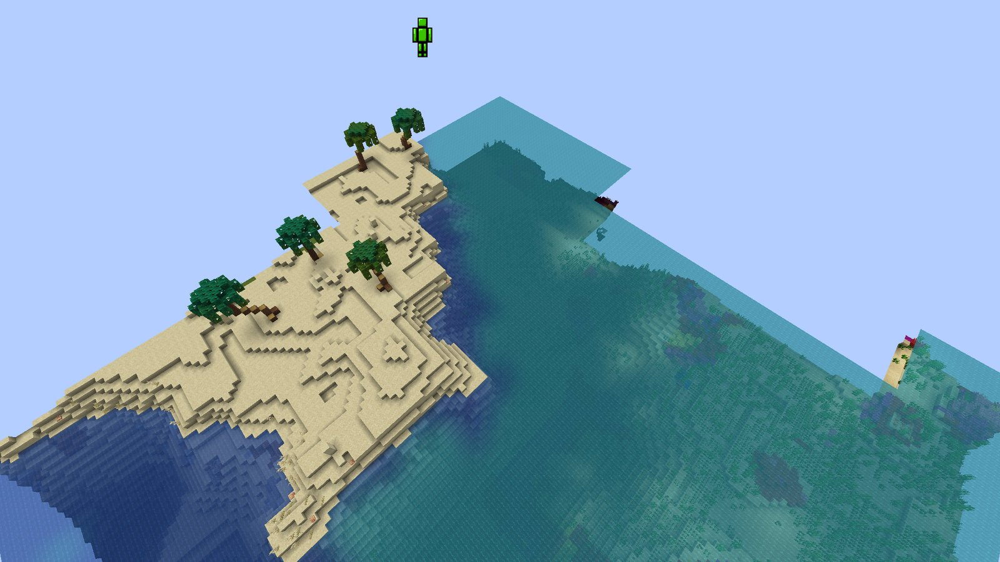<figcaption>Maintenant, en jeu : falaise calcaire et haut-fond.</figcaption></figure></div></section>
<section id="lagon" aria-labelledby="t-lagon"><h2 id="t-lagon">Lagon</h2><p class="etat"><span class="pastille toi">À toi de voir</span></p>
<ul><li>Fond qui varie de 3 à 8 blocs, coraux multipliés par 10, herbiers par 9.</li>
<li><b>Îlot A</b> : sable (94 %), gravier et coquillages, cocotiers, 0 glace. Le biome de plage est maintenant forcé autour de l’îlot.</li>
<li><b>Îlot du Phare</b> : socle rocheux irrégulier, criques et pointes, sable dans les anses. Score cubique en jeu 1,3 (34,6 avant). Le lot du phare (32 × 32) reste réservé à la construction. 0 glace ni neige.</li>
<li><b>Poissons</b> (dans un rayon de 64 blocs autour du point du lagon) : pas encore comptés (travail en file).</li></ul>
<div class="paire"><figure>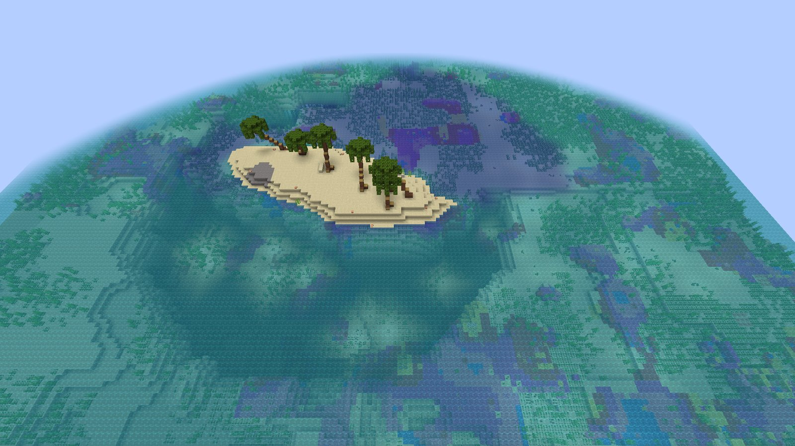<figcaption>Lagon, en jeu, vue haute.</figcaption></figure><figure>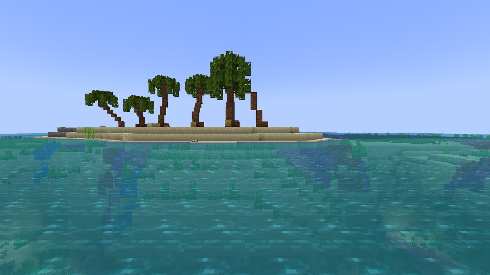<figcaption>Lagon, en jeu, vue au sol.</figcaption></figure>
<figure>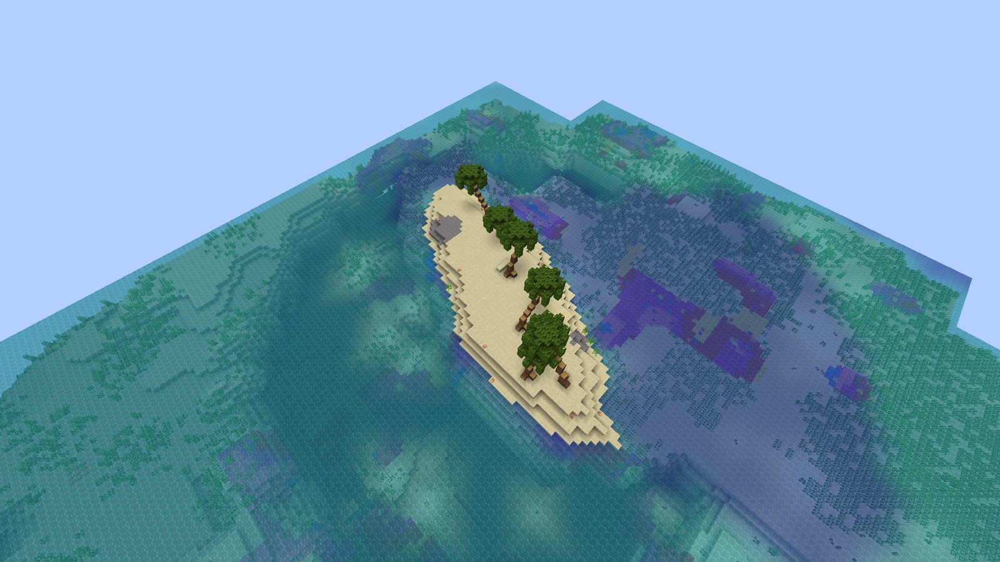<figcaption>Îlot A, en jeu, vue haute.</figcaption></figure><figure>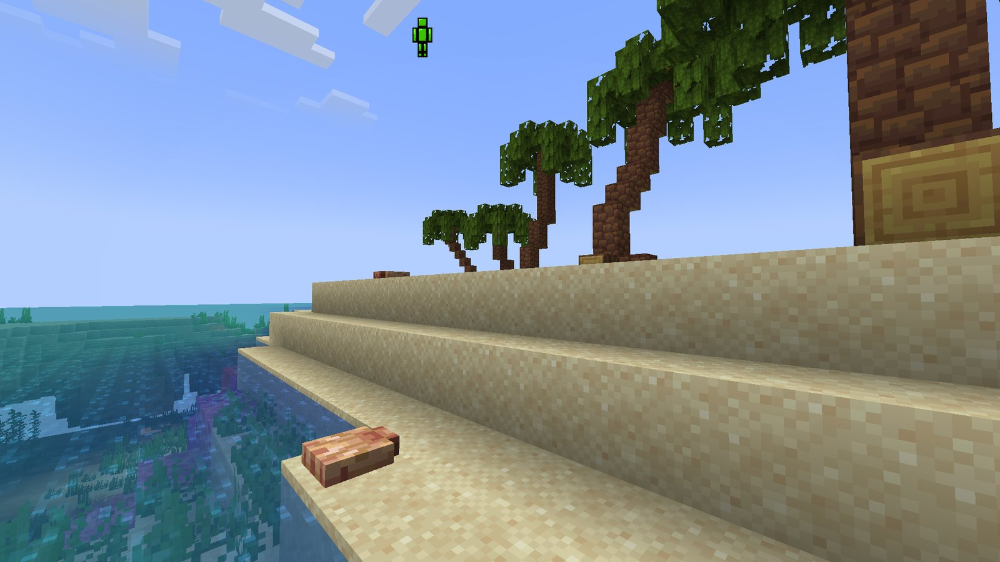<figcaption>Îlot A, en jeu, vue au sol.</figcaption></figure>
<figure>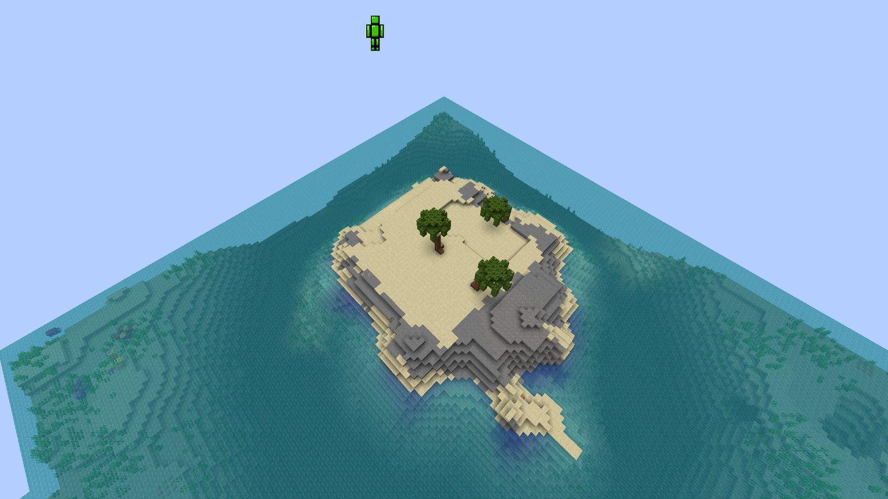<figcaption>Îlot du Phare, en jeu, vue haute.</figcaption></figure><figure>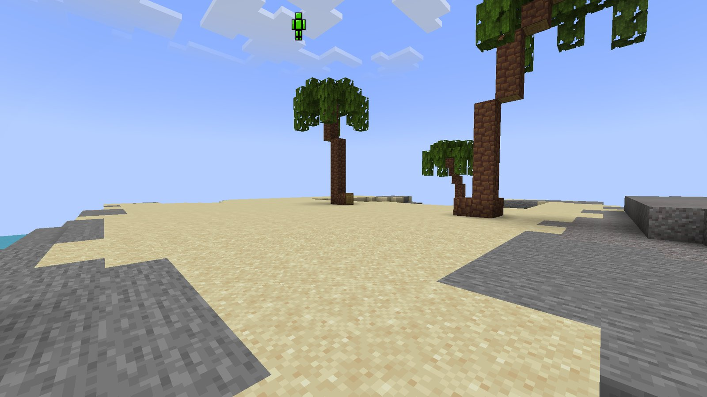<figcaption>Îlot du Phare, en jeu, vue au sol.</figcaption></figure>
<figure><figcaption>Îlot du Phare, vue 3D calculée depuis le sud-est : en haut avant, en bas après.</figcaption></figure><figure><figcaption>Vue de dessus : à gauche avant, à droite après ; trois coupes en dessous (gris = avant).</figcaption></figure></div></section>
<section id="nature" aria-labelledby="t-nature"><h2 id="t-nature">Nature et débris</h2><p class="etat"><span class="pastille cours">En cours</span></p><p>Les sols en taches (mousse, podzol, gravier, terre grossière) et les bancs de sable des rivières sont en place. Les débris sont plus grands (épaves de 5-6 blocs, poteaux de 6-9 blocs, clôtures de 6-12 blocs) et deux fois plus nombreux.</p><div class="un"><figure><figcaption>Zone humide (3330, 860), vue de dessus calculée : avant / maintenant (taches de sol, bancs).</figcaption></figure></div></section>
<section id="sculpter" aria-labelledby="t-sculpter"><h2 id="t-sculpter">Lieux sculptés</h2><p class="etat"><span class="pastille toi">À toi de voir</span></p><p>Les 11 lieux les plus « cubiques » de la carte sont sculptés et maintenant générés en jeu (test c22). Le relief en jeu suit le relief prévu (écart médian 0 à 0,1 bloc). Chaque lieu montre la vue 3D calculée, la vue de dessus, puis les vraies vues en jeu.</p><div class="tab"><table><thead><tr><th>N°</th><th>Lieu</th><th>x, z</th><th>Score avant</th><th>Prévu</th><th>En jeu</th></tr></thead><tbody><tr><td class="n">1</td><td>Côte vase, Mangroves du Sud</td><td class="n">-1392, 5760</td><td class="n">38,6</td><td class="n">6,7</td><td class="n"><b>4,0</b></td></tr><tr><td class="n">2</td><td>Côte plage, Jungle de l’Ouest</td><td class="n">-5136, -672</td><td class="n">30,7</td><td class="n">7,4</td><td class="n"><b>6,1</b></td></tr><tr><td class="n">3</td><td>Côte falaise calcaire, nord</td><td class="n">240, -5712</td><td class="n">28,1</td><td class="n">6,9</td><td class="n"><b>5,8</b></td></tr><tr><td class="n">4</td><td>Zone humide</td><td class="n">3330, 860</td><td class="n">25,0</td><td class="n">7,6</td><td class="n"><b>4,4</b></td></tr><tr><td class="n">5</td><td>Côte plage, Petite-Terre</td><td class="n">3312, -1248</td><td class="n">19,5</td><td class="n">3,7</td><td class="n"><b>5,0</b></td></tr><tr><td class="n">6</td><td>Côte rocheuse, Île du volcan</td><td class="n">-3936, 4416</td><td class="n">18,9</td><td class="n">2,5</td><td class="n"><b>6,2</b></td></tr><tr><td class="n">7</td><td>Hauts plateaux / Canyons</td><td class="n">-1296, 2144</td><td class="n">14,6</td><td class="n">4,0</td><td class="n"><b>5,7</b></td></tr><tr><td class="n">8</td><td>Côte calcaire, Savane sèche</td><td class="n">-288, -3504</td><td class="n">11,3</td><td class="n">3,7</td><td class="n"><b>4,6</b></td></tr><tr><td class="n">9</td><td>Friches / Marais aux spores</td><td class="n">1680, -384</td><td class="n">10,6</td><td class="n">2,0</td><td class="n"><b>3,4</b></td></tr><tr><td class="n">10</td><td>Hauts plateaux / Bénara</td><td class="n">-416, 1616</td><td class="n">10,4</td><td class="n">3,7</td><td class="n"><b>3,0</b></td></tr><tr><td class="n">11</td><td>Côte falaise, Canyons de latérite</td><td class="n">-3216, 3264</td><td class="n">7,0</td><td class="n">4,2</td><td class="n"><b>3,9</b></td></tr></tbody></table></div><p style="color:var(--muted)">Score cubique : 0 = naturel ; au-dessus de 8, l'allure cubique se voit.</p><div class="lieu"><h3>1. Côte vase, Mangroves du Sud</h3><p>Score cubique 38,6 avant, 4,0 en jeu.</p><div class="paire"><figure><figcaption>Vue 3D calculée depuis le sud-est : en haut avant, en bas après.</figcaption></figure><figure><figcaption>Vue de dessus calculée : à gauche avant, à droite après ; coupes en dessous (gris = avant).</figcaption></figure><figure>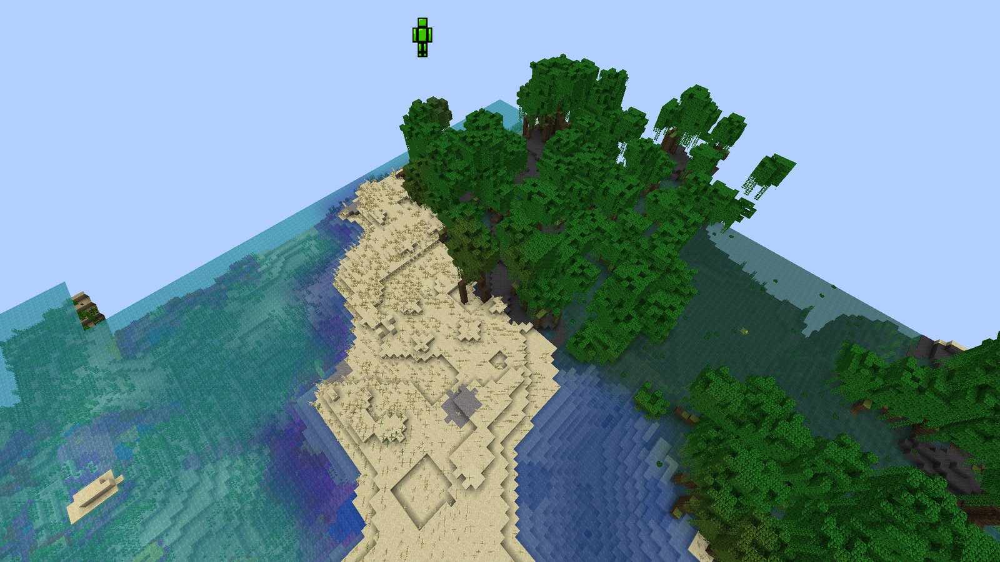<figcaption>En jeu, vue haute (à 45 blocs au-dessus du sujet, 40 blocs en arrière).</figcaption></figure><figure>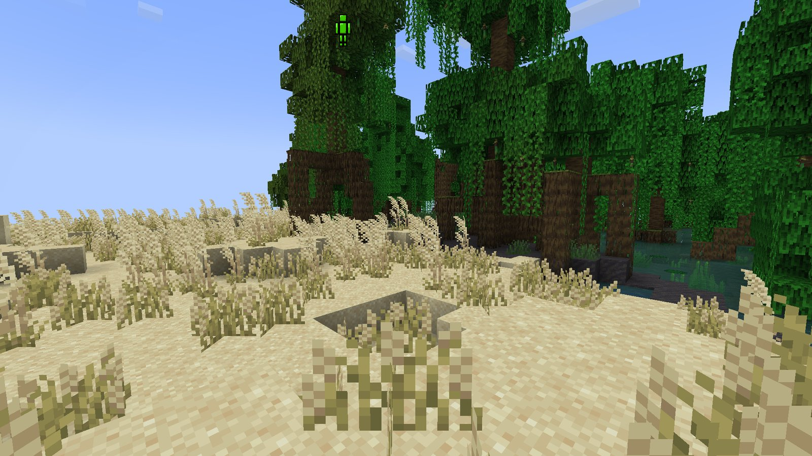<figcaption>En jeu, vue au sol.</figcaption></figure></div></div><div class="lieu"><h3>2. Côte plage, Jungle de l’Ouest</h3><p>Score cubique 30,7 avant, 6,1 en jeu.</p><div class="paire"><figure><figcaption>Vue 3D calculée depuis le sud-est : en haut avant, en bas après.</figcaption></figure><figure><figcaption>Vue de dessus calculée : à gauche avant, à droite après ; coupes en dessous (gris = avant).</figcaption></figure><figure>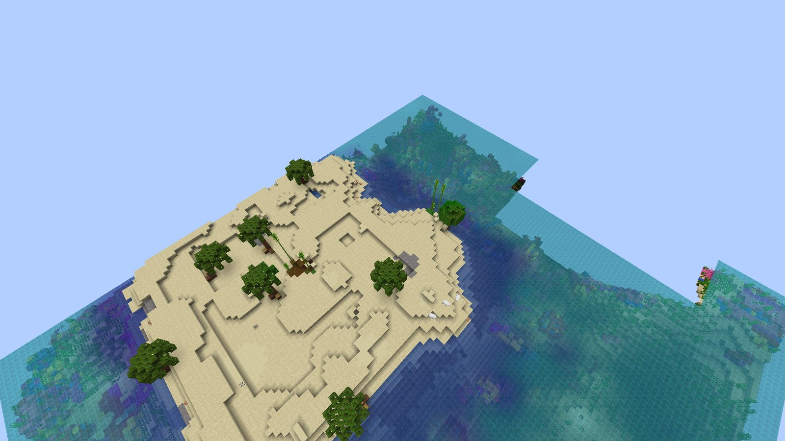<figcaption>En jeu, vue haute (à 45 blocs au-dessus du sujet, 40 blocs en arrière).</figcaption></figure><figure>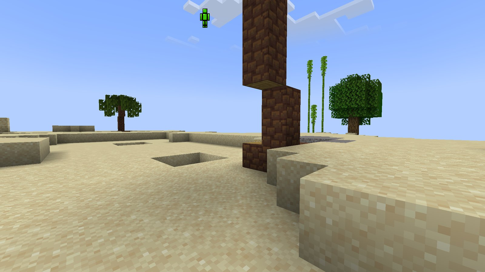<figcaption>En jeu, vue au sol.</figcaption></figure></div></div><div class="lieu"><h3>3. Côte falaise calcaire, nord</h3><p>Score cubique 28,1 avant, 5,8 en jeu.</p><div class="paire"><figure><figcaption>Vue 3D calculée depuis le sud-est : en haut avant, en bas après.</figcaption></figure><figure><figcaption>Vue de dessus calculée : à gauche avant, à droite après ; coupes en dessous (gris = avant).</figcaption></figure><figure><figcaption>En jeu, vue haute (à 45 blocs au-dessus du sujet, 40 blocs en arrière).</figcaption></figure><figure>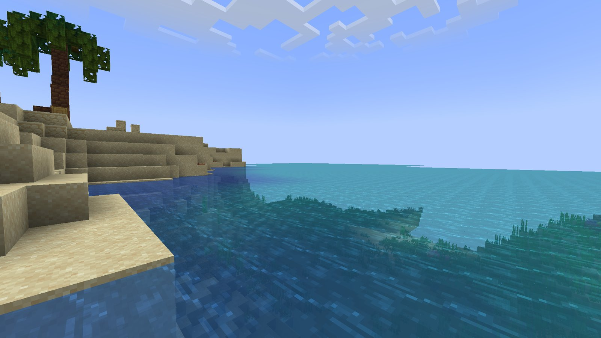<figcaption>En jeu, vue au sol.</figcaption></figure></div></div><div class="lieu"><h3>4. Zone humide</h3><p>Score cubique 25,0 avant, 4,4 en jeu. Il reste un peu de neige et de glace : le biome de base (désert de gravier froid de Terralith) gèle l’eau. Le mod 0.9.6e corrige ce cas (0 bloc de neige hors jeu) mais n’a pas encore été testé dans un monde neuf.</p><div class="paire"><figure><figcaption>Vue 3D calculée depuis le sud-est : en haut avant, en bas après.</figcaption></figure><figure><figcaption>Vue de dessus calculée : à gauche avant, à droite après ; coupes en dessous (gris = avant).</figcaption></figure><figure>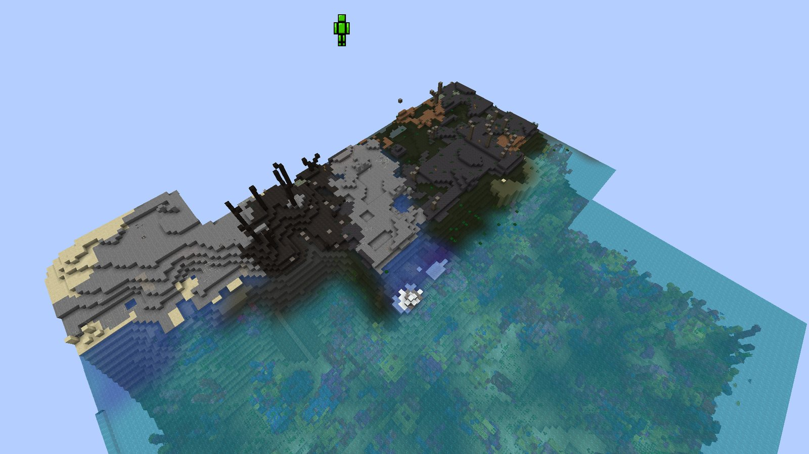<figcaption>En jeu, vue haute (à 45 blocs au-dessus du sujet, 40 blocs en arrière).</figcaption></figure><figure>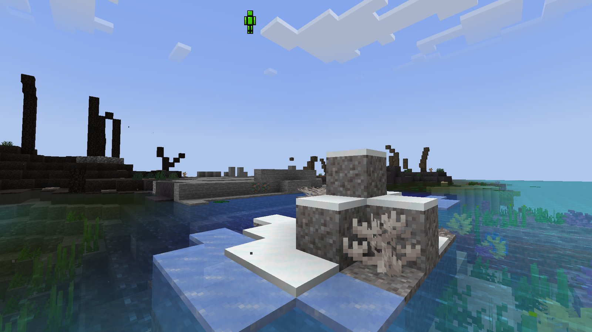<figcaption>En jeu, vue au sol.</figcaption></figure></div></div><div class="lieu"><h3>5. Côte plage, Petite-Terre</h3><p>Score cubique 19,5 avant, 5,0 en jeu.</p><div class="paire"><figure><figcaption>Vue 3D calculée depuis le sud-est : en haut avant, en bas après.</figcaption></figure><figure><figcaption>Vue de dessus calculée : à gauche avant, à droite après ; coupes en dessous (gris = avant).</figcaption></figure><figure>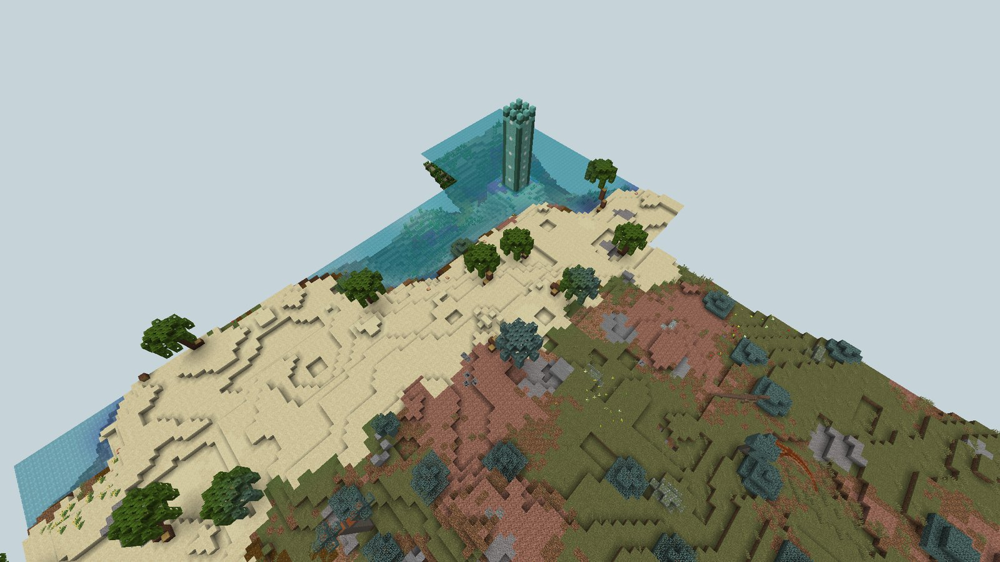<figcaption>En jeu, vue haute (à 45 blocs au-dessus du sujet, 40 blocs en arrière).</figcaption></figure><figure>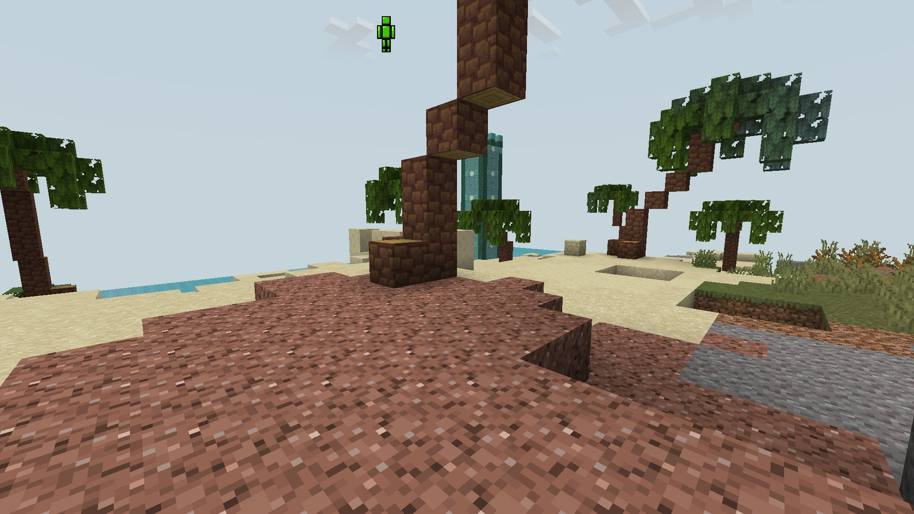<figcaption>En jeu, vue au sol.</figcaption></figure></div></div><div class="lieu"><h3>6. Côte rocheuse, Île du volcan</h3><p>Score cubique 18,9 avant, 6,2 en jeu. La vue au sol a été refaite depuis un point plus haut, sans la colonne de basalte qui cachait le tiers droit.</p><div class="paire"><figure><figcaption>Vue 3D calculée depuis le sud-est : en haut avant, en bas après.</figcaption></figure><figure><figcaption>Vue de dessus calculée : à gauche avant, à droite après ; coupes en dessous (gris = avant).</figcaption></figure><figure>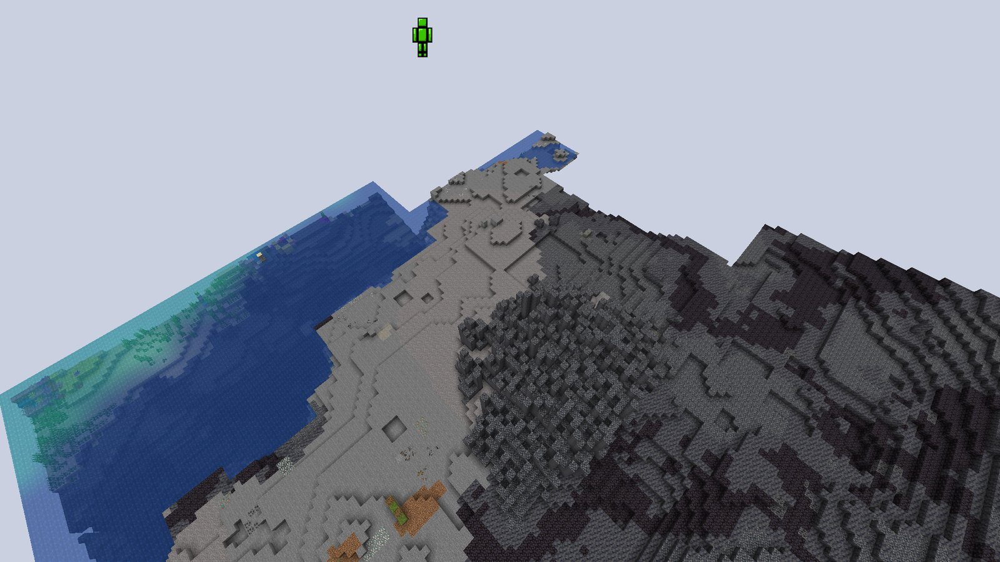<figcaption>En jeu, vue haute (à 45 blocs au-dessus du sujet, 40 blocs en arrière).</figcaption></figure><figure>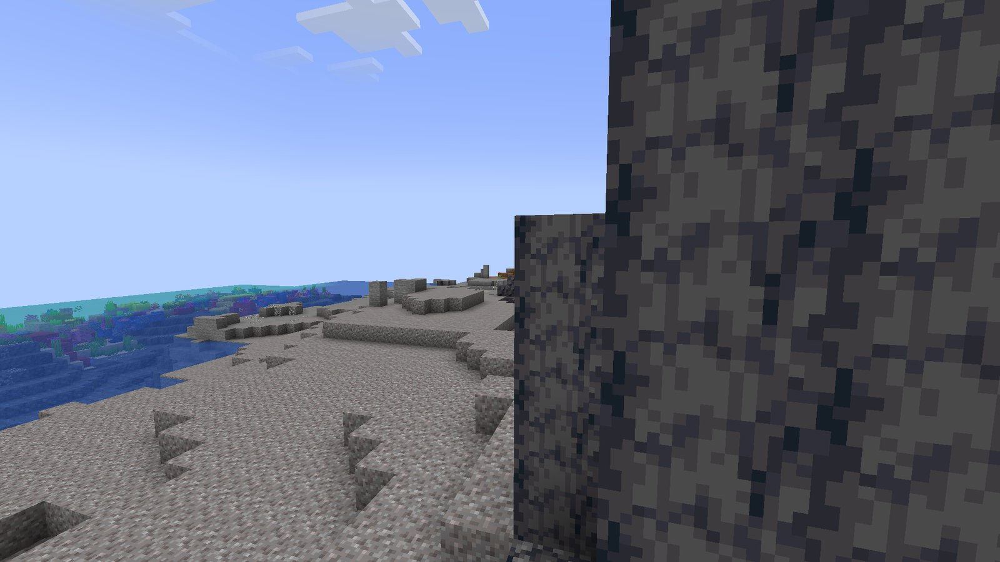<figcaption>En jeu, vue au sol.</figcaption></figure></div></div><div class="lieu"><h3>7. Hauts plateaux / Canyons</h3><p>Score cubique 14,6 avant, 5,7 en jeu.</p><div class="paire"><figure><figcaption>Vue 3D calculée depuis le sud-est : en haut avant, en bas après.</figcaption></figure><figure><figcaption>Vue de dessus calculée : à gauche avant, à droite après ; coupes en dessous (gris = avant).</figcaption></figure><figure>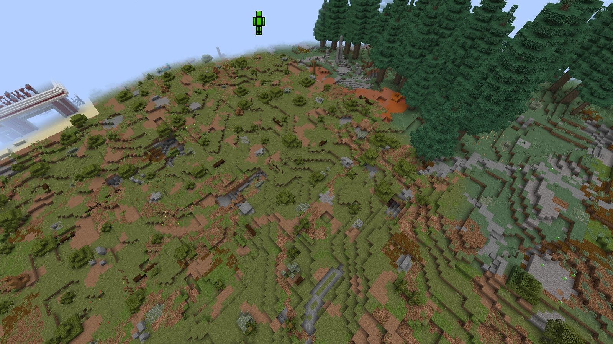<figcaption>En jeu, vue haute (à 45 blocs au-dessus du sujet, 40 blocs en arrière).</figcaption></figure><figure>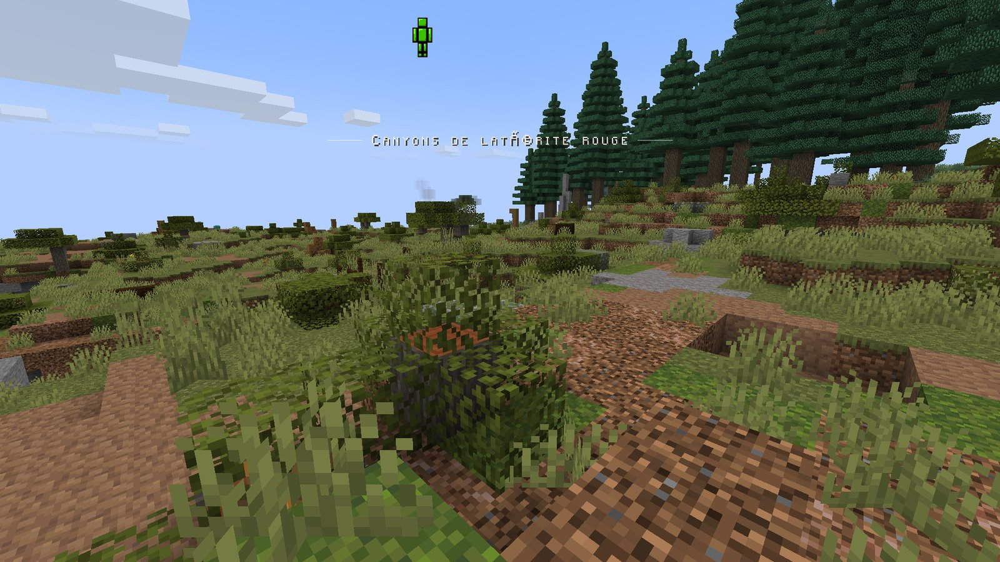<figcaption>En jeu, vue au sol.</figcaption></figure></div></div><div class="lieu"><h3>8. Côte calcaire, Savane sèche</h3><p>Score cubique 11,3 avant, 4,6 en jeu. Les arbres qui semblaient flotter sur la première capture n’existent pas dans le monde : c’était un défaut d’affichage au moment du cliché.</p><div class="paire"><figure><figcaption>Vue 3D calculée depuis le sud-est : en haut avant, en bas après.</figcaption></figure><figure><figcaption>Vue de dessus calculée : à gauche avant, à droite après ; coupes en dessous (gris = avant).</figcaption></figure><figure>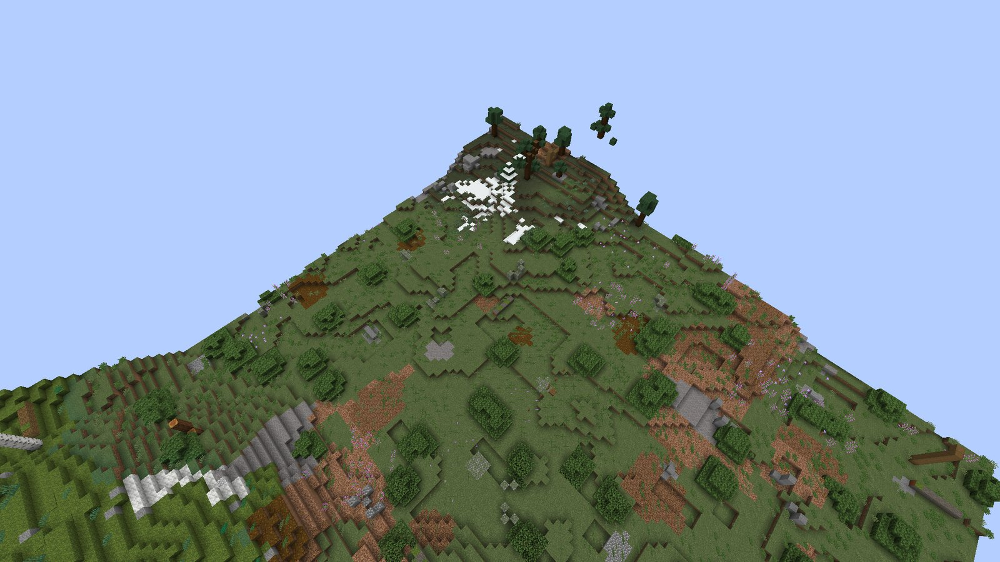<figcaption>En jeu, vue haute (à 45 blocs au-dessus du sujet, 40 blocs en arrière).</figcaption></figure><figure>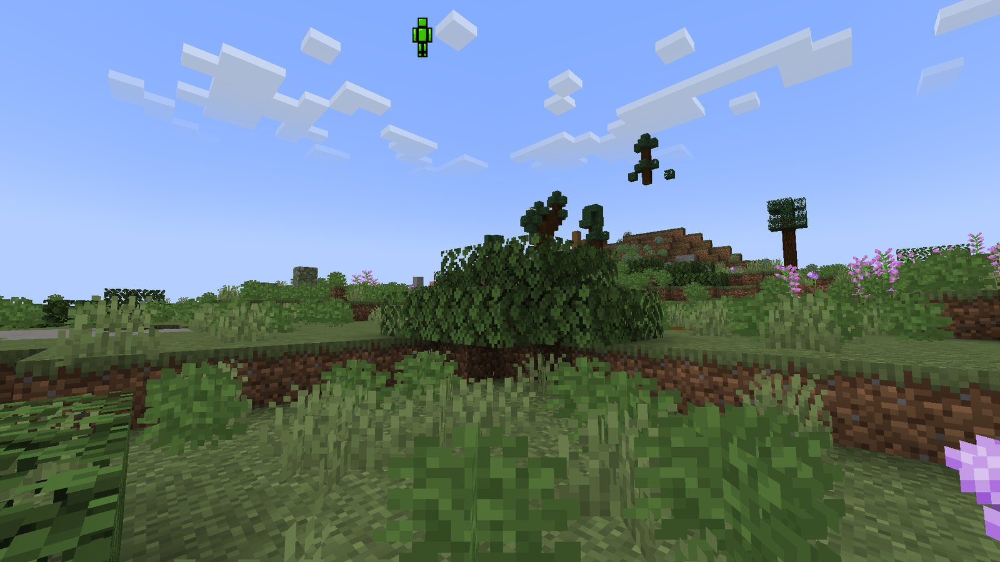<figcaption>En jeu, vue au sol.</figcaption></figure></div></div><div class="lieu"><h3>9. Friches / Marais aux spores</h3><p>Score cubique 10,6 avant, 3,4 en jeu.</p><div class="paire"><figure><figcaption>Vue 3D calculée depuis le sud-est : en haut avant, en bas après.</figcaption></figure><figure><figcaption>Vue de dessus calculée : à gauche avant, à droite après ; coupes en dessous (gris = avant).</figcaption></figure><figure>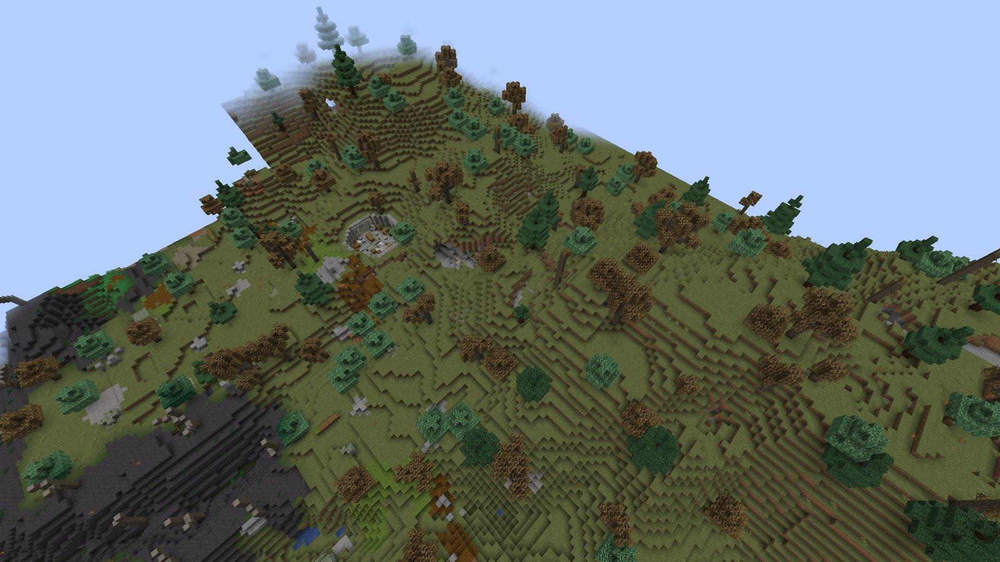<figcaption>En jeu, vue haute (à 45 blocs au-dessus du sujet, 40 blocs en arrière).</figcaption></figure><figure>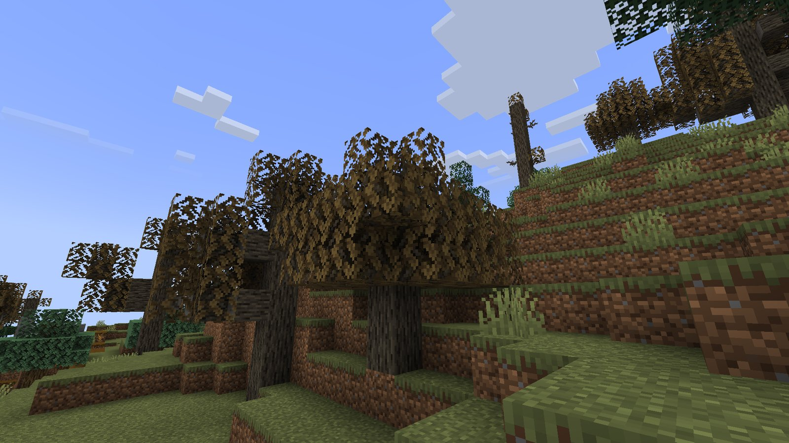<figcaption>En jeu, vue au sol.</figcaption></figure></div></div><div class="lieu"><h3>10. Hauts plateaux / Bénara</h3><p>Score cubique 10,4 avant, 3,0 en jeu.</p><div class="paire"><figure><figcaption>Vue 3D calculée depuis le sud-est : en haut avant, en bas après.</figcaption></figure><figure><figcaption>Vue de dessus calculée : à gauche avant, à droite après ; coupes en dessous (gris = avant).</figcaption></figure><figure>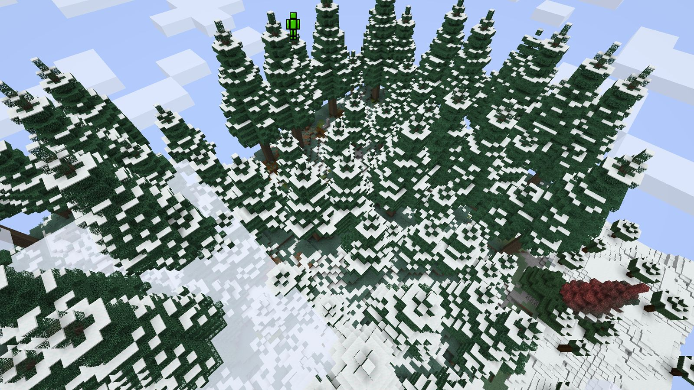<figcaption>En jeu, vue haute (à 45 blocs au-dessus du sujet, 40 blocs en arrière).</figcaption></figure><figure>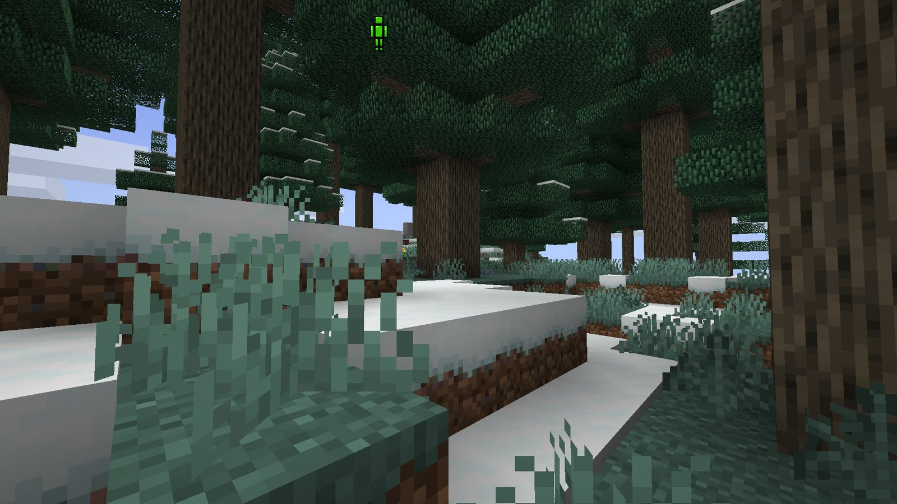<figcaption>En jeu, vue au sol.</figcaption></figure></div></div><div class="lieu"><h3>11. Côte falaise, Canyons de latérite</h3><p>Score cubique 7,0 avant, 3,9 en jeu.</p><div class="paire"><figure><figcaption>Vue 3D calculée depuis le sud-est : en haut avant, en bas après.</figcaption></figure><figure><figcaption>Vue de dessus calculée : à gauche avant, à droite après ; coupes en dessous (gris = avant).</figcaption></figure><figure>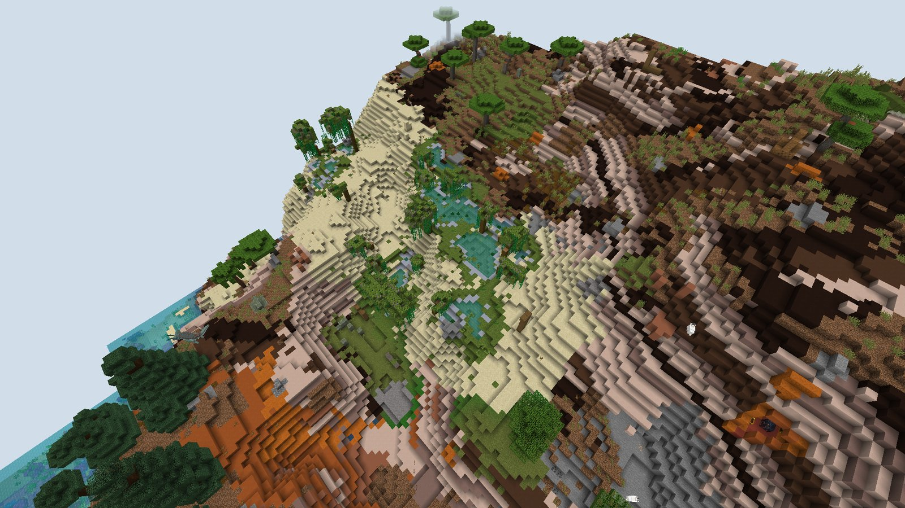<figcaption>En jeu, vue haute (à 45 blocs au-dessus du sujet, 40 blocs en arrière).</figcaption></figure><figure>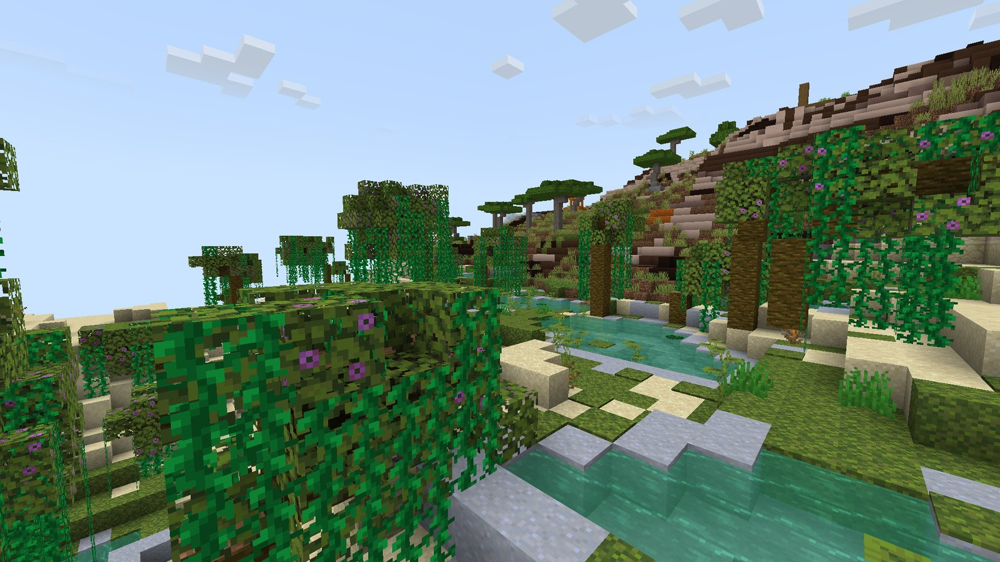<figcaption>En jeu, vue au sol.</figcaption></figure></div></div></section>
<section id="majicavo" aria-labelledby="t-majicavo"><h2 id="t-majicavo">Majicavo</h2><p class="etat"><span class="pastille toi">À toi de voir</span></p><ul><li>Plateau du lot 70 posé ; bord du lot : 1 seule marche de 2 blocs sur 512 (attendu 2 % au plus).</li><li>Marges et fondus végétalisés : 35 % de végétation près du lot, 5 % plus loin.</li><li>Les deux petits bassins d’eau au-dessus de Y 63 sont des bassins construits du lot, pas un défaut.</li></ul>
<div class="paire"><figure>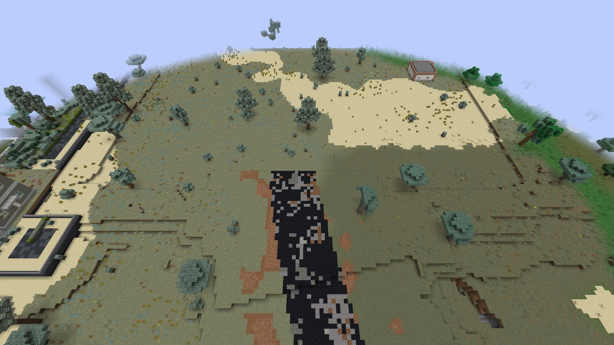<figcaption>Bord du lot, en jeu, vue haute.</figcaption></figure><figure>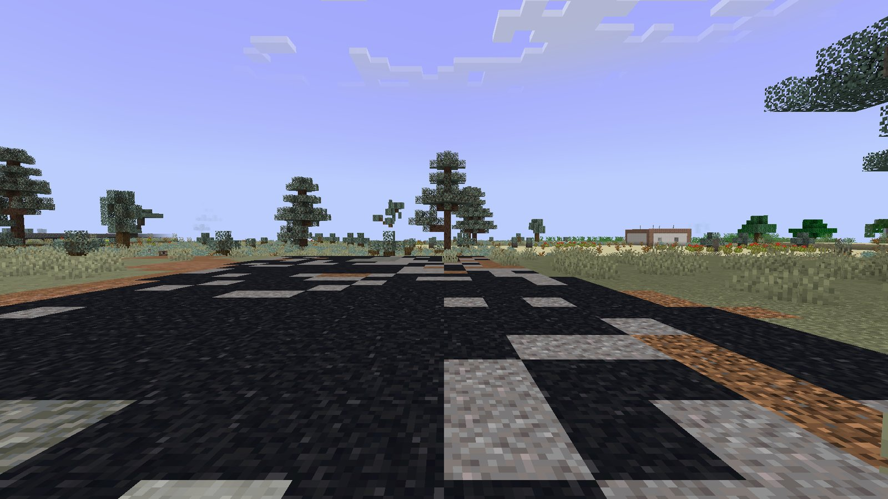<figcaption>Bord du lot, en jeu, vue au sol.</figcaption></figure>
<figure>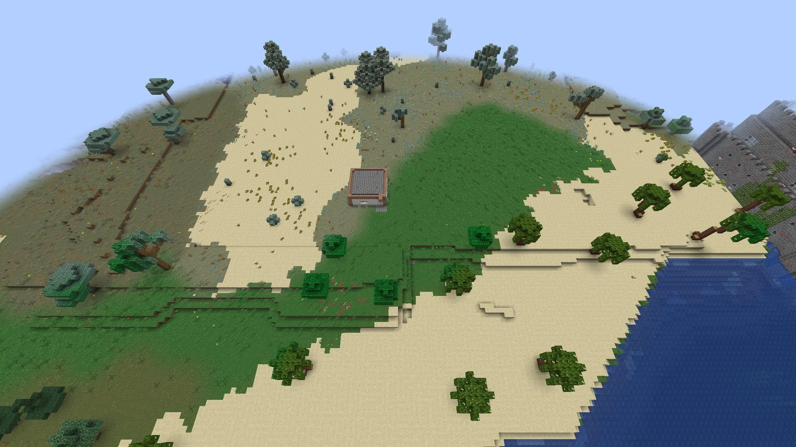<figcaption>Côté est, en jeu, vue haute.</figcaption></figure><figure>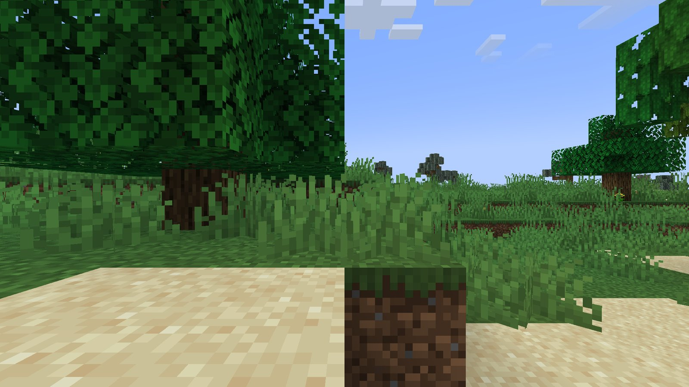<figcaption>Côté est, en jeu, vue plongeante prise de 12 blocs de haut, sans arbre devant.</figcaption></figure></div></section>
<section id="rue" aria-labelledby="t-rue"><h2 id="t-rue">Rue du jour 1</h2><p class="etat"><span class="pastille ok">Validé</span></p><ul><li>Plateau du lot 68 à Y 67 sur 97,4 % des 9 844 colonnes, 0 colonne non générée.</li><li>Aucune lave au sud du lot (18 333 colonnes lues) ; plus de mare dans la marge.</li></ul>
<div class="paire"><figure>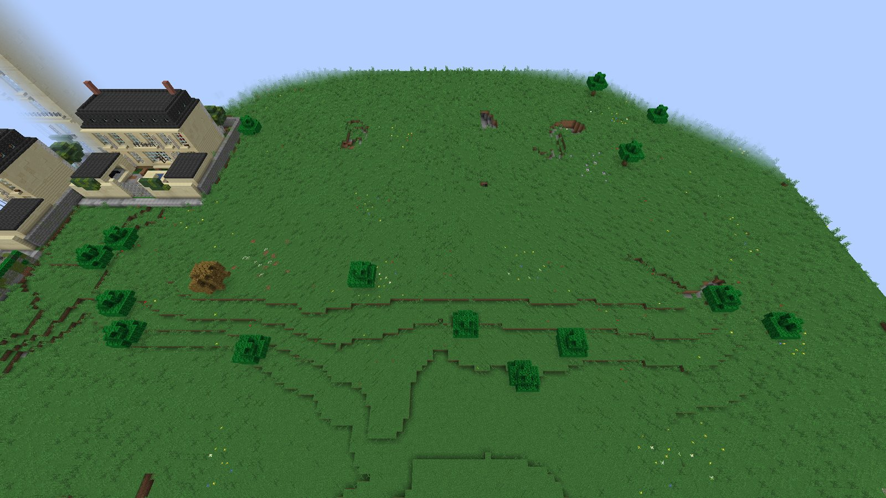<figcaption>Bord du lot, en jeu, vue haute.</figcaption></figure><figure>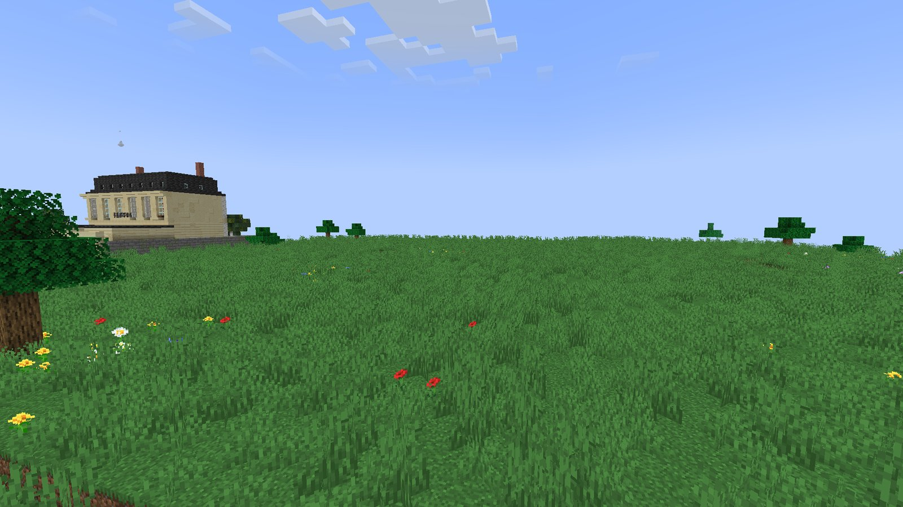<figcaption>Bord du lot, en jeu, vue au sol.</figcaption></figure></div></section>
<section id="ville" aria-labelledby="t-ville"><h2 id="t-ville">Ville pilote de Mamoudzou</h2><p class="etat"><span class="pastille ok">Validé</span></p><p>Le raccord entre la ville et le terrain naturel est continu au nord et au sud. À l'est, le bord donne sur l'eau.</p><div class="un"><figure><figcaption>En jeu : raccord nord, sans marche visible.</figcaption></figure></div></section>
<section id="lave" aria-labelledby="t-lave"><h2 id="t-lave">Petite-Terre sans lave</h2><p class="etat"><span class="pastille ok">Validé</span></p><p>Plus aucune lave ni aucun magma sur Petite-Terre : 0 bloc sur 1 963 chunks générés. Le cratère est remplacé par des arbustes. Vue de dessus calculée.</p><div class="duo"><figure><figcaption>Avant : coulées de lave (orange) et magma.</figcaption></figure><figure><figcaption>Maintenant : arbustes, herbe, pierre et plage.</figcaption></figure></div></section>
<section id="captures" aria-labelledby="t-captures"><h2 id="t-captures">Captures en jeu</h2><p class="etat"><span class="pastille cours">En cours</span></p><ul><li>34 vues en jeu (17 points, vue haute et vue au sol), en 1920 × 1080, distance 8, après chargement complet des chunks. Elles sont réparties dans les sections ci-dessus.</li><li>Les 29 vues de la 2e passe seront refaites avec l’interface des mods coupée (passe complète).</li></ul></section>
</main>
